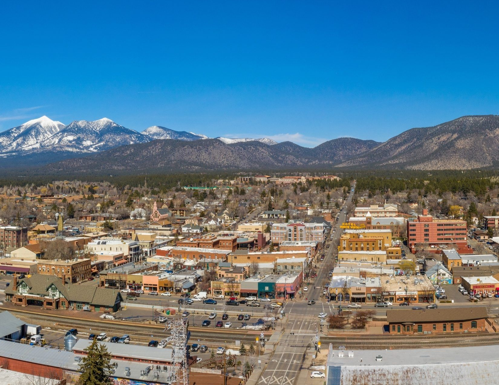

Nestled amidst the world's largest contiguous ponderosa pine forest, Flagstaff offers a refreshing escape from Arizona's desert heat. This charming mountain town boasts a rich history, breathtaking scenery, and endless opportunities for outdoor adventure. Hike or bike through scenic trails, explore dormant volcanoes and ancient cliff dwellings, or cool off in the crystal-clear waters of nearby lakes. Flagstaff's vibrant downtown area beckons with historic architecture, a thriving craft brewery scene, and a lively arts and culture scene. Whether you seek relaxation under the cool mountain air or an adrenaline rush on the slopes, Flagstaff promises an unforgettable Arizona experience. (Google Gemini, personal communication, March 18, 2024)
